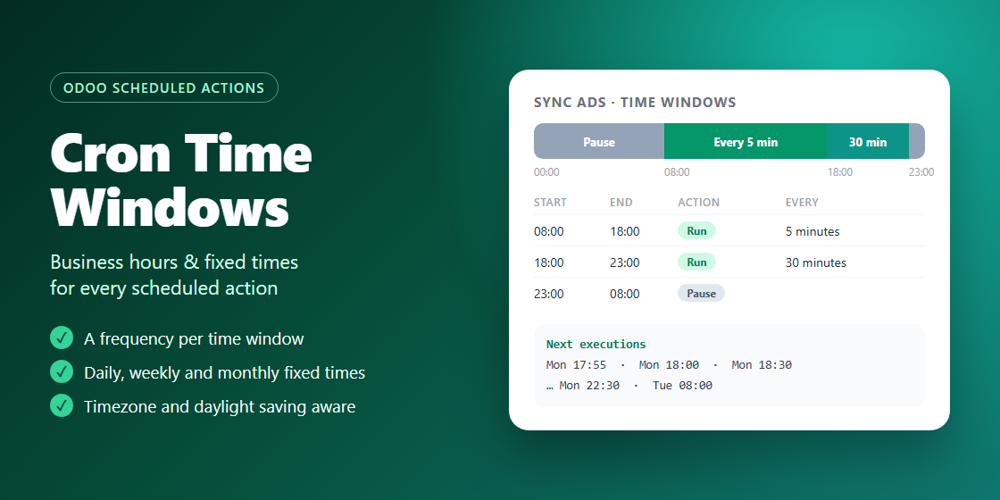

Business hours & fixed times for every scheduled action
Tell each cron when it may run: every 5 minutes during office hours, every 30 minutes in the evening, never at night. Or run it at fixed times: every day at 07:30, every Monday at 09:00, on the last day of the month.

The Sync ads example, set in a minute on the native cron form:
Each window runs the job at its own interval, in minutes or hours, or pauses it. Slots are aligned on the window start (08:00, 08:05, 08:10...), so the cadence never drifts.
Daily, weekly or monthly times, as many as you need. A job set on the 31st runs on the last day of shorter months.
Limit a window to some weekdays, or let it cross midnight: a Friday 22:00-06:00 window covers Friday night until Saturday morning.
Windows follow the wall clock of the timezone you choose, across summer time and Ramadan changes alike. The next execution is still stored in UTC.
The form lists the next ten executions as you edit, and explains what is wrong when two windows overlap or the job would never run.
Save reusable templates, then select crons in the list and apply a template, another cron's schedule, or one you define on the spot.
base only.Made by WebThreenity
WebThreenity implements, customizes and supports Odoo: ERP rollouts, custom modules, version upgrades and integrations. Tell us about your project.
Contact WebThreenity